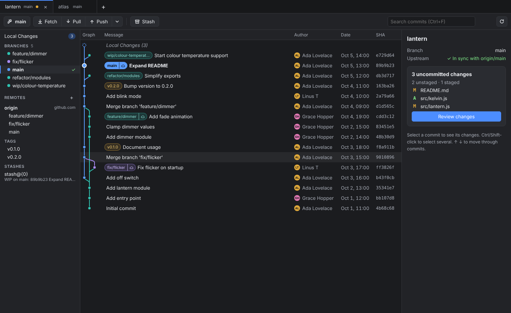
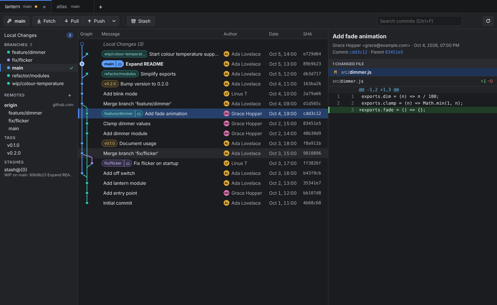
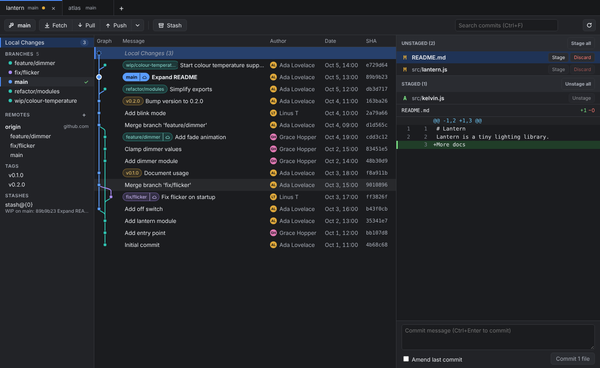

What you get
Commit graph
Lanes, lane-coloured badges for branches, tags and remotes, a dashed "Local Changes" node, and lazy loading for long histories.
Search
Find commits by message, author, hash or ref name, then step through the matches.
Tabs for many repos
Drag to reorder. Your tabs are restored on restart.
Rebase onto here
Right-click any commit. Uncommitted changes are autostashed, and conflicts get Continue / Skip / Abort.
Squash
Select consecutive commits and squash them, or fold one into its parent with a reworded message.
Remotes & pruning
Add, edit and remove remotes. Clean up local branches whose upstream is "gone" in one click.
Live refresh
Commit in a terminal and the graph updates by itself.
Install
You need git 2.25 or newer.
AppImage (easiest, no Node.js needed)
Download forklin-<version>-x86_64.AppImage from the Releases page, then:
chmod +x forklin-*.AppImage
./forklin-*.AppImage /path/to/repoOn Ubuntu 22.04+ the AppImage may also need FUSE 2: sudo apt install libfuse2 (libfuse2t64 on 24.04).
From source
Needs a current Node.js with npm (apt's version is often too old; nvm works well).
git clone https://github.com/smistry7/forklin.git
cd forklin
scripts/install-desktop.sh # npm install + app-grid entry + `forklin` commandThe installer links the checkout into ~/.local/bin/forklin and adds an app-grid entry, so keep the folder where it is, and make sure ~/.local/bin is on your PATH. To run without installing a launcher use npm install && npm start.
Getting started
- Launch Forklin from your app grid, or run
forklin /path/to/repo. - Open a repository with Ctrl+T, the + button, or Open repository…. Each repo gets its own tab.
- Click a commit to see its changed files and diff, or nothing to see a repository overview. Click Local Changes at the top of the graph to stage, unstage and commit.
- Right-click commits, branches, tags, remotes and stashes for the rest of the actions.
Using Forklin
Reading history
Each coloured lane is a line of history. Badges mark branches (green is your checked-out branch), tags and remote branches. Click a commit to see its message, author, parent and per-file diffs in the right-hand panel.

Staging and committing
Select Local Changes to see unstaged and staged files. Use Stage all / Unstage all or click individual files, check the diff, type a message and press Ctrl+Enter to commit. Tick Amend last commit to fold the change into the previous commit. Discarding changes asks for confirmation.

Rebase onto here
Right-click any commit and choose Rebase <current branch> onto here. Uncommitted changes are autostashed. If there are conflicts, a banner offers Continue, Skip and Abort.
Squash commits
Ctrl/Shift-click to select several commits, right-click, then Squash N commits…. They must be consecutive, merge-free commits on the current branch. Squash into parent… works on one commit, or a consecutive selection, and folds it into the commit below with a message prompt to reword the result.
Branches, tags and stashes
Right-click a branch, tag or stash in the sidebar, or any commit, to check out, create a branch or tag, merge, cherry-pick, revert, reset (soft, mixed or hard) and more. Deleting a tag can remove it from remotes too. Destructive actions ask before they run.
Remotes
The sidebar's Remotes section lists each remote with its URL and branches. Use + to add one; right-click a remote to edit its name or URL, or remove it. Fetch, pull and push live in the toolbar, with ahead/behind counts on Pull and Push. Force push (with lease) is in the menu next to Push.
Prune gone branches
After a fetch, local branches whose upstream was deleted on the remote show gone. The ✂ button on the sidebar's Branches header lists them and deletes them all. The checked-out branch is never deleted.
Keyboard shortcuts
Cmd works in place of Ctrl on macOS.
| Ctrl+T / Ctrl+O | Open a repository |
| Ctrl+W | Close the current tab |
| Ctrl+Tab | Next tab |
| Ctrl+1…9 | Jump to tab |
| Ctrl/Shift-click | Select several commits |
| Ctrl+F | Search commits (Enter / Shift+Enter for next / previous match) |
| F5 | Refresh |
| ↑ / ↓ | Move through commits |
| Esc | Clear the commit selection |
| Ctrl+Enter | Commit (in the message box) |
Privacy
Forklin runs entirely on your machine. It has no accounts, no telemetry and makes no network calls of its own. Only the git commands you trigger (fetch, pull, push) touch the network, and they go through your own git configuration and credentials.